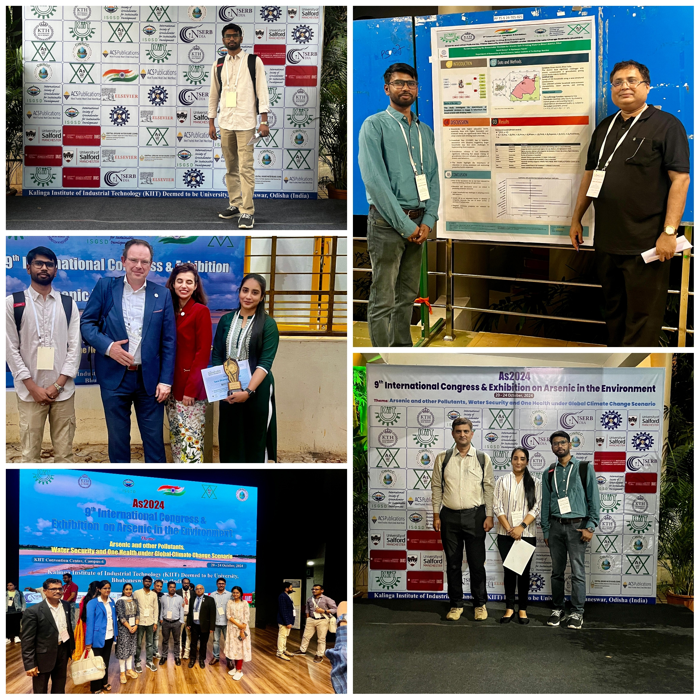
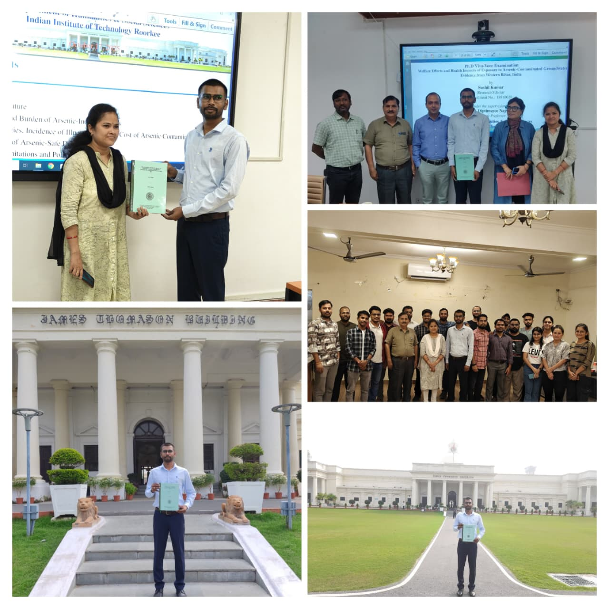

Dr. Sushil Kumar
Environmental Economist | Researcher | Educator
Research-driven scholar specializing in environmental economics, groundwater contamination, public health, sustainability, and development policy using applied econometrics and interdisciplinary research methods.
Research Interests
Environmental Economics
Research on environmental degradation, groundwater contamination, and sustainability.
Health Economics
Examining health costs, disease burden, and socioeconomic impacts of pollution exposure.
Applied Econometrics
Bayesian analysis, SEM, SUBP models, PCA, and advanced quantitative methods.
Development Studies
Research on poverty, education, livelihood, and rural transformation.
Current Research Projects
Arsenic Contamination in Bihar
Assessing health and economic burden associated with arsenic exposure.
NFHS & NSS Data Analysis
Large-scale data analysis involving health, education, and socio-economic indicators.
Education Infrastructure
Comparative study of government and private schools in Bihar.
Tribal Development & Fintech
Indigenous knowledge systems and fintech solutions for tribal livelihoods.
Academic & Research Gallery

Poster Presentation at AS2024

Ph.D Final Viva-Voce